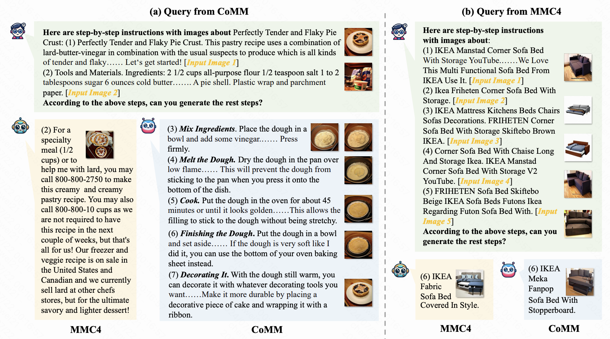
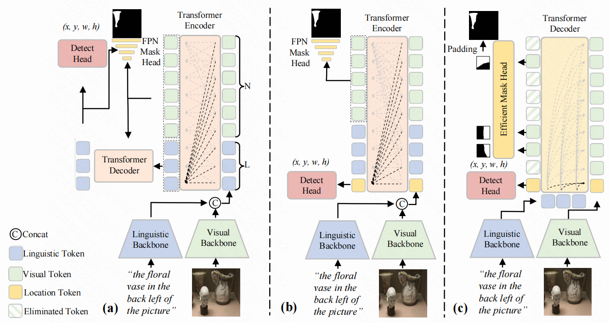

Wei ChenPhD StudentDepartment of Computer Science and Engineering The Hong Kong University of Science and Technology Email: csewei.chen AT connect DOT ust DOT hk
|
|
Biography
I am a PhD student in the Department of Computer Science and Engineering at The Hong Kong University of Science and Technology, where I am advised by Prof. Long Chen in the LONG Group. Prior to this, I obtained my bachelor's degree from the School of Computer Science at Wuhan University, under the supervision of Prof. Yu Wu.
Research Interests
My research interests lie in multi-modal content understanding and generation, which include:
- Vision-language alignment in Multi-modal Large Language Models (MLLM)
- Reinforcement Learning from Human Feedback (RLHF) in MLLM
- Developing benchmarks for comprehensively evaluating MLLM capabilities
Publications

CoMM: A Coherent Interleaved Image-Text Dataset for Multimodal Understanding and Generation

An Efficient and Effective Transformer Decoder-Based
Framework for Multi-Task Visual Grounding
| © Wei Chen |